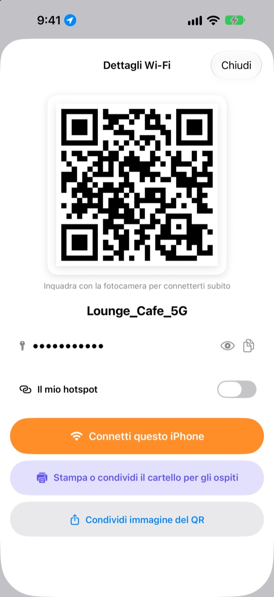
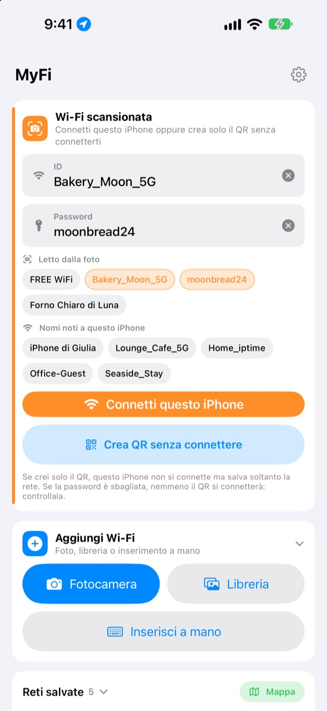
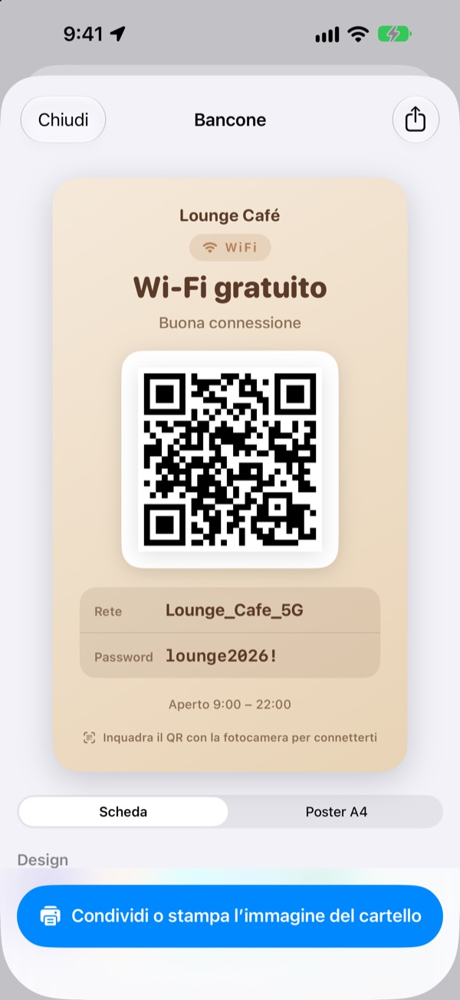
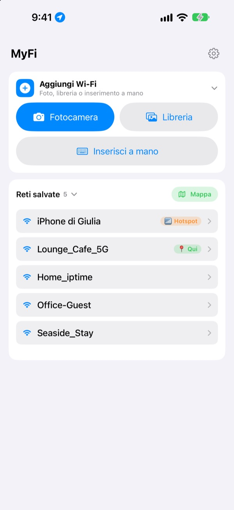

Basta dettare la password.
Mostra un codice QR.
Gli amici inquadrano con la fotocamera e sono connessi. Il cartello sul muro del bar? Una foto e questo iPhone si connette. Niente più errori a ricopiarla.
Tutte le funzioni sono gratis. iPhone con iOS 17 o successivo.

Crea il codice QR del tuo Wi-Fi
Cambia nome o password e il cartello si aggiorna subito. Inquadralo con la fotocamera di un telefono e comparirà davvero la proposta di connessione.
«Qual era la password del Wi-Fi?» Quante volte oggi?
La detti e sbagli le maiuscole. Ricopi il cartello sul muro e confondi lo 0 con la O. Poi rispieghi tutto da capo. MyFi riduce tutto a una foto e a un codice QR.
Una foto e sei connesso
Fotografa il cartello del Wi-Fi o lo scontrino, oppure scegli un’immagine dalla libreria. MyFi legge nome della rete e password e connette questo iPhone. Se sul cartello c’è anche un codice QR, legge prima quello, così i dati sono esatti.
Se il testo non è chiaro, trascina un pezzo estratto dalla foto nel campo del nome o della password.

Crea e stampa il cartello per gli ospiti
Scegli uno dei 7 temi e aggiungi nome, logo e righe come gli orari di apertura. Scegli scheda o poster A4 verticale, salvalo come immagine o stampalo subito con AirPrint.
Tieni più cartelli, uno per locale o per tavolo, e modificali quando vuoi.

Dove torni, compare per primo
Le reti a cui ti connetti o che condividi vengono salvate insieme al luogo. Quando torni, quella rete è in cima all’elenco, e tutti i luoghi salvati sono su una mappa.
Metti il codice QR del Wi-Fi che condividi di più come widget nella schermata Home o nella schermata di blocco. Se un ospite chiede, basta mostrare lo schermo.

Si parte in tre passi
- 1
Apri l’app
Chiede una volta l’accesso alla posizione, perché iOS rivela il nome del Wi-Fi attuale solo alle app che ce l’hanno.
- 2
Fotografa o scrivi
Fai una foto al cartello o inserisci una sola volta la password del tuo Wi-Fi.
- 3
Connetti o mostra
Connetti questo iPhone o mostra il codice QR alla fotocamera dell’altra persona.
Dove trovare cosa
- Connettersi con la foto di un cartello
Aggiungi Wi-Fi, poiFotocameraoLibreria, poiConnetti questo iPhone- Inserire i dati a mano
Aggiungi Wi-Fi, poiInserisci a mano- Creare solo il codice QR
Crea QR senza connettere- Mandare il codice QR in un messaggio
- Tocca una rete salvata, poi
Condividi immagine del QR - Cartello per gli ospiti
- Tocca una rete salvata, poi
Stampa o condividi il cartello per gli ospiti - Il tuo hotspot come QR
- Tocca una rete salvata e attiva
Il mio hotspot - Connettere o condividere con un gesto
- Nell’elenco scorri a destra per connetterti, a sinistra per condividere
- Vedere i luoghi salvati
Mappa, accanto aReti salvate- Il QR nella schermata Home
- Tieni premuto sulla schermata Home e aggiungi il widget
QR Wi-Fidi MyFi
Puoi anche aprire subito il codice QR con Siri o con l’app Comandi Rapidi.
Tutte le funzioni sono gratis
Gratis
- Connessione al Wi-Fi da una foto
- Creazione di codici QR e condivisione come immagine
- Cartelli per gli ospiti in 7 temi, scheda o poster A4, stampa con AirPrint
- Widget per schermata Home e schermata di blocco
- Mappa dei Wi-Fi salvati
- Niente pubblicità, niente registrazione
Mancia (facoltativa)
- Se ti piace, puoi sostenere lo sviluppo con una mancia
- La mancia non sblocca nulla. Anche senza hai tutte le funzioni
La mancia è un piccolo pagamento singolo.
Nessun abbonamento e nessuna funzione a pagamento.
Domande frequenti
Perché devo scrivere io la password?
iOS non permette a nessuna app di leggere le password Wi-Fi salvate sul dispositivo. Per questo MyFi rileva il nome della rete e tu inserisci la password una sola volta. Poi usa quella salvata.
Non vedo il nome del Wi-Fi a cui sono connesso.
iOS dà il nome del Wi-Fi solo alle app con accesso alla posizione. Consenti MyFi in Impostazioni › Privacy e sicurezza › Localizzazione. La posizione serve solo a leggere il nome della rete e a riconoscere i luoghi in cui torni.
Ha letto male il nome o la password.
Avvicinati e scatta la foto dritta. Se ancora non va, trascina il pezzo giusto della foto nel campo o correggilo a mano. Se il cartello ha un codice QR del Wi-Fi, MyFi lo legge e compila i dati esatti.
Quali cartelli sa leggere?
Va meglio con cartelli scritti in inglese o coreano, con etichette come ID, PW, SSID, Network o Password. Anche senza etichette trova la riga che sembra una password. Il codice QR del Wi-Fi su un cartello viene letto con esattezza in qualsiasi lingua.
Come si connette qualcuno con il mio codice QR?
Su iPhone o Android basta inquadrare il codice con la fotocamera integrata e toccare la proposta di connessione. Non serve nessuna app.
Gli altri possono vedere la mia password?
Il codice QR contiene i dati di accesso Wi-Fi standard. Decidi sempre tu se condividerlo, e sul cartello per gli ospiti puoi nascondere la password.
Perché non riesco a connettermi al mio hotspot?
L’hotspot personale del tuo iPhone è il telefono stesso, che non può connettersi a sé. Attiva Il mio hotspot e MyFi lo tratta come un codice QR da dare agli altri.
Dove finiscono i miei dati Wi-Fi?
MyFi non ha server. Nomi di rete, password, risultati delle foto e posizioni vengono elaborati e salvati solo sul tuo dispositivo. Niente pubblicità né tracciamento. L’app invia ad Apple iCloud solo statistiche d’uso anonime e segnalazioni di errore per poter essere migliorata.
Su quali dispositivi funziona?
Su iPhone con iOS 17 o successivo. L’app è disponibile in 24 lingue.
Domande o suggerimenti? Scrivi a leeo@kakao.com. Di solito rispondo entro 2 o 3 giorni.